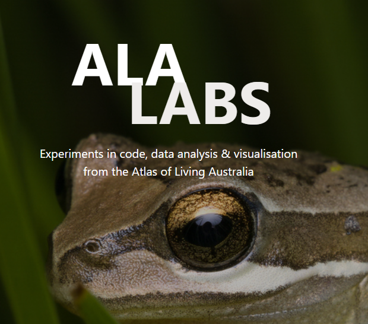
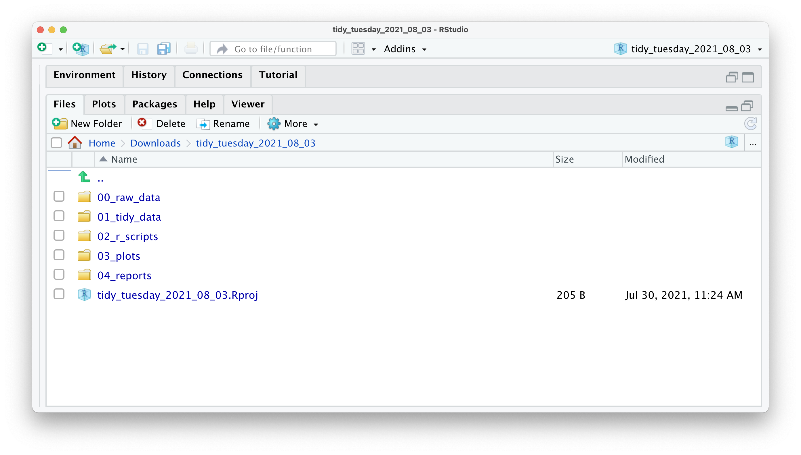

How to make a shareable code workflow for reproducible and efficient science
Dax Kellie, Martin Westgate
@daxkellie
Biology & ecology in crisis?
Evolutionary biology & ecology research is not immune to wider issues of scientific research

Questionable Research Practices are prevalent but usually unintentional
Supporting reproducibility at the ALA
ALA Labs

https://labs.ala.org.au/R Projects


The {renv} package
Initialise a new project-local R library
Save the state of the project to a lockfile
{
"R": {
"Version": "4.2.3",
"Repositories": [
{
"Name": "CRAN",
"URL": "https://cloud.r-project.org"
}
]
},
"Packages": {
"markdown": {
"Package": "markdown",
"Version": "1.0",
"Source": "Repository",
"Repository": "CRAN",
"Hash": "4584a57f565dd7987d59dda3a02cfb41"
},
"mime": {
"Package": "mime",
"Version": "0.7",
"Source": "Repository",
"Repository": "CRAN",
"Hash": "908d95ccbfd1dd274073ef07a7c93934"
}
}
}
Document results for easy referencing later
Quarto is like a refined, updated R Markdown - it’s easy and makes documents look nice
Thank you
Dax Kellie
Data Analyst & Science Lead
Science & Decision Support | ALA
e: dax.kellie@csiro.au
: @daxkellie
gh: @daxkellie
Science & Decision Support team
Martin Westgate, Fonti Kar, Olivia Torresan
Shandiya Balasubramaniam, Amanda Buyan
Juliet Seers, Callum Waite
These slides were made using Quarto & RStudio
Slides: